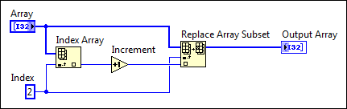
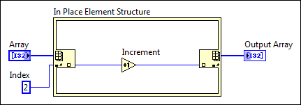

Use the In Place Element structure to control how the LabVIEW compiler performs common operations more efficiently than traditional LabVIEW programming methods and to increase memory and VI efficiency. Many LabVIEW operations require LabVIEW to copy and maintain data values in memory, thereby decreasing execution speed and increasing memory usage.
The In Place Element structure uses border nodes, or nodes that are attached to the border of the In Place Element structure, to perform operations on data. When you move or delete a border node, LabVIEW automatically moves or deletes the corresponding node on the opposite side of the structure.
The In Place Element structure can execute common LabVIEW operations more efficiently than traditional LabVIEW programming methods.
The following block diagram shows a situation in which you can use the In Place Element structure to improve the execution and memory efficiency of a VI.

In the previous block diagram, LabVIEW indexes an array of 32-bit unsigned integers, increments the third element of the array, and replaces the element in the same location of the array. To replace the new value in the same array, the Replace Array Subset function requires you to wire the array and array index values to the array and index inputs of the function. When you run the VI, LabVIEW makes a new copy of the array element and stores the copy in memory.
Use the In Place Element structure to avoid making extra copies of the array element, as shown in the following block diagram.

In the previous block diagram, the Array Index / Replace Elements border node of the In Place Element structure indexes an array of 32-bit unsigned integers, increments the third element of the array, and replaces the element in the same location in the array, similar to the first block diagram example. However, in this instance, LabVIEW does not have to create or store extra copies of the element in memory.
The In Place Element structure requires you to replace each indexed element of the array in the array with the node on the right side of the structure. Because the structure requires you to replace the array element and the LabVIEW compiler knows which element to replace, LabVIEW does not have to create or store extra copies of the array elements in memory.